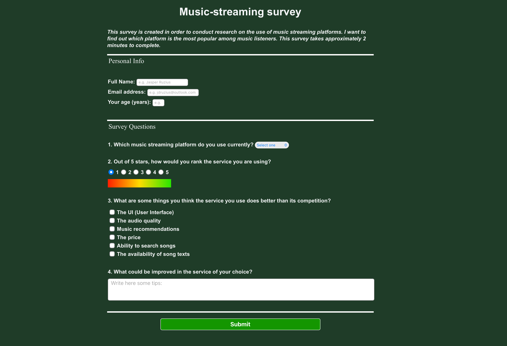
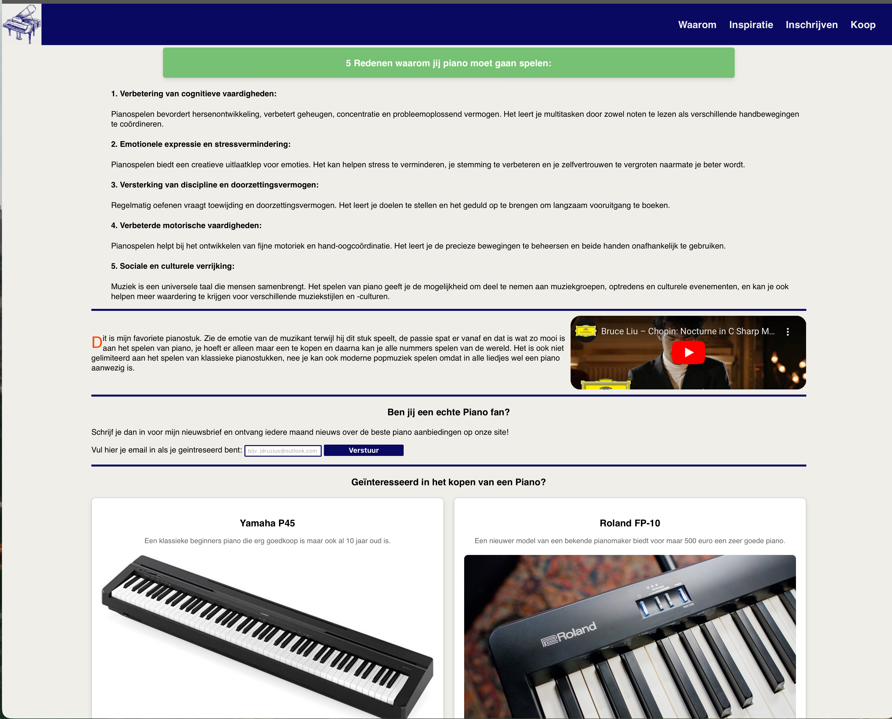

Welcome to my Website: I'm Jasper Ruzius

A quick look at my life:
2006
- Born in Arnhem, the Netherlands
2010
- Started primary school
2016
- Moved to Doesburg, the Netherlands
2018
- Began Gymnasium (highest level of high school in the Netherlands)
2022
- Participated in the Model European Parliament (regional, national, and international levels)
2023-2024
- Mentored MEP candidates in debating and writing resolutions
2023-2024
- Completed 270 hours of research on mycelium as an insulation material
2024
- Graduated cum laude from Gymnasium
2024
- Turned 18 and officially became an adult :)
Some of My Projects
My PWS project involved research, while the other projects were part of my journey to earning a web design certificate.
 PWS Project
PWS Project

My First Project

My Second Project
Follow or Contact Me Here: